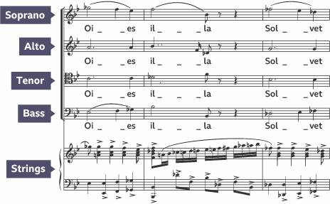
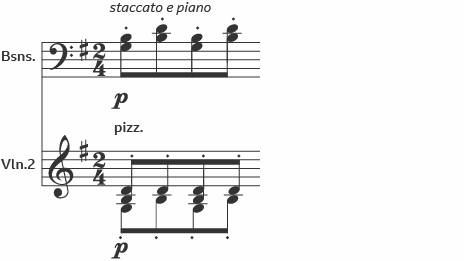
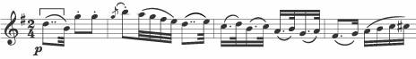
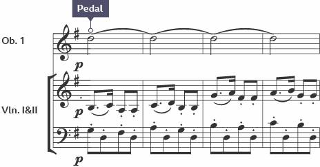

https://www.bbc.co.uk/bitesize/guides/zdk48mn/revision/1
Verdi: Requiem
The Dies Irae was written by the Italian composer Giuseppe Verdi in 1874 and is a section from a much larger piece of religious music called Verdi’s Requiem. Dies Irae is Latin for Day of Wrath and it tells of a person coming before God to receive judgement at the end of their mortal life.
Part of
Western classical tradition 1650 to 1910
Add to My Bitesize
TwitterFacebookWhatsApp
Share
Verdi and the Requiem
Giuseppe Verdi
Romantic period composer Giuseppe Verdi
Born in 1813, Giuseppe Verdi was an Italian opera composer during the Romantic period. As a child, Verdi received much of his musical training through the local church near Bussetto. After completing his studies, Verdi moved to Milan and began to establish himself as a musician, director and composer. In 1839, his first opera Oberto was premiered in Italy’s most prestigious theatre, La Scala.
During his lifetime, Verdi composed over 25 operas and a number of sacred works for voices and orchestra. One of his most famous sacred works is the Requiem Mass in D minor. Composed in 1874 and performed a year later in Milan, the Requiem consists of four soloists, full choir and large orchestra.
The Requiem
A requiem is a mass for the dead and would have been performed at a funeral service. Requiems omit parts of a traditional mass that are deemed too joyful such as the Gloria and Credo. Instead, they are replaced with more emotional and solemn sections such as the Requiem Aeternam (Eternal Rest), the Dies Irae (Day of Wrath) and the Pie Jesu (Merciful Jesus).
Although requiems had been composed in the Classical period, they became popular in the Romantic period and were often performed at concerts rather than in church services. The Romantic period saw the size of the orchestra expand significantly. This allowed composers to write music which was very dramatic and emotional. The Dies Irae is a section from Verdi’s Requiem and was first performed at the church of San Marco in Milan in 1874.
The points to remember include:
?span style="font:7.0pt "Times New Roman""> the overall tonality is A minor
?span style="font:7.0pt "Times New Roman""> some sections modulate to major keys and ends in the relative major, C
Verdi wrote the Requiem with intense harmonic devices, such as:
?span style="font:7.0pt "Times New Roman""> dissonance throughout the entire work - perhaps the most dramatic example is the descending chromatic vocal lines over a tonic pedal in bars 5 to 8 on the words 'Dies Irae'
?span style="font:7.0pt "Times New Roman"">

 An
excerpt from the opening sequence of Dies Irae and the conflicting harmony that
creates a sound of dissonance
An
excerpt from the opening sequence of Dies Irae and the conflicting harmony that
creates a sound of dissonance
?span style="font:7.0pt "Times New Roman""> complex harmonies, including diminished and added-note chords
?span style="font:7.0pt "Times New Roman""> a wide range in pitch, which gives a heightened sense of drama and emotion
Verdi, like many composers in the Romantic period, exploited extreme dynamic ranges to help convey drama in the music. These are some of the most dramatic moments in Dies Irae:
?span style="font:7.0pt "Times New Roman""> the final few bars close very softly and is marked pppp
?span style="font:7.0pt "Times New Roman""> the brass section play frequently with accents at a fortissimo (ff) dynamic and are marked tutta forza, which means with force
The Requiem has the following order of sections:
1. Requiem Aeternam - Eternal Rest
2. Kyrie Eleison - Lord have Mercy
3. Lacrimosa - Mourning
4. Dies Irae - Day of Wrath
5. Domine Jesu - Lord Jesus Christ
6. Sanctus - Holy
7. Benedictus - Blessed be the Lord
8. Pie Jesu - Merciful Jesus
9. Agnus Dei - Lamb of God
10. Lux Aeterna - Eternal Light
11. Libera Me - Deliver Me
12. as a complete piece of work it is through-composed
The piece has been written for a very large choir and orchestra. These instruments include:
?span style="font:7.0pt "Times New Roman""> a solo vocal quartet (soprano, mezzo-soprano, tenor, bass)
?span style="font:7.0pt "Times New Roman""> mixed chorus
?span style="font:7.0pt "Times New Roman""> three flutes
?span style="font:7.0pt "Times New Roman""> piccolo
?span style="font:7.0pt "Times New Roman""> two oboes
?span style="font:7.0pt "Times New Roman""> two clarinets
?span style="font:7.0pt "Times New Roman""> four bassoons
?span style="font:7.0pt "Times New Roman""> four French horns
?span style="font:7.0pt "Times New Roman""> eight trumpets (four off stage)
?span style="font:7.0pt "Times New Roman""> three trombones
?span style="font:7.0pt "Times New Roman""> ophicleide
?span style="font:7.0pt "Times New Roman""> timpani
?span style="font:7.0pt "Times New Roman""> bass drum
?span style="font:7.0pt "Times New Roman""> strings
Some of the techniques found in Verdi's Requiem can be transferred to other performances and composing. By understanding the effects of each may develop musicianship skills. They are shown here in this table.
|
|
In performance |
In composing |
|
Dynamics, phrasing, articulation |
Pay attention to all of the composer’s instructions to ensure that the music achieves its intended effect. |
Use a wide dynamic range in order to create drama and tension. Add detail such as staccato and legato instructions. Look at how the melodies are phrased and add phrase marks and slurs in the score to help an instrumentalist interpret these in the way you would like them to be played. |
|
Tonality |
Before learning a new piece of music, work out whether the music is in a major or minor key and if it modulates. Make sure the correct emotion and mood of the music is conveyed. |
Write a short melody in a major key then transpose the same melody into a minor key to create a different mood and contrasting section. |
|
Harmony |
Understanding of the harmony of a piece of music can help make sense of the individual’s or ensemble’s part. Even if one note is played, knowing how this note relates to the chord or sequence of chords being played by the orchestra can allow a greater degree of music expression. |
Develop a simple melody by adding a major or minor third on top of the original note. Add a fifth and more degree of the scale to explore other levels of harmony. |
When Verdi was born, Italy consisted of a group of small kingdoms and principalities, with little more to unite them than a common language. At the time of his death in 1901, Italy had become a unified country. Historians believe that Verdi and his music played a crucial role in this unification, as his operas provided the patriotic soundtrack needed for mobilising and inspiring the masses to make the dream of a united country come true. He has been acknowledged as probably the greatest composer Italy had ever produced and has influenced many other composers including the British composer, Benjamin Britten.
Haydn: Symphony No.101, second movement
https://www.bbc.co.uk/bitesize/guides/zj4r97h/revision/4
Theme A establishes the ‘tick-tock?idea and the main melody. The ‘tick-tock?accompaniment idea is heard from the beginning and is played by staccato bassoons - fagotti - and pizzicato strings.

 The bassoon and second violin parts are written with staccato
accents
The bassoon and second violin parts are written with staccato
accents
The main melody is heard from bar 2 and is played by violin 1. It is eight bars in length and features two complimentary phrases, each lasting four bars.
The melody is mainly conjunct, and features dotted and double dotted rhythms. Haydn also adds acciaccaturas which add melodic embellishment. When Theme A returns at bar 24, the dynamic is pianissimo and the viola is also added.

The first four bars of the main melody played on the violin
Theme B, played by con arco strings, features sequential and scalic writing.
Between bars 17 and 20, the oboe plays an upper pedal note.

An audio extract of upper pedal note played on the oboe
In section B, the main idea is based on a dotted rhythmic pattern heard in bar 3. The drama is heightened by the use of sforzando (sf) from bar 36 and accents in bars 50-51.
A new melodic idea is introduced at bar 52 that features rhythmic syncopation, and is arpeggiated and sequential.
In Section A2, the ‘tick-tock?/span> accompaniment is now played by the flute and bassoon in thirds. In the return of Theme B, the main melody is still played by violin 1 but accompanied by just the flute and bassoon.
When theme A returns, it is melodically inverted in the flute part, and the countermelody heard at bar 75 returns at bar 123 with the oboe playing an octave lower. There is a short coda at bar 146 and a tonic pedal played on the viola.
The tempo is marked andante and the piece is in 2/4 time, which is a simple duple time signature. Haydn uses dotted and double dotted rhythms as well as demisemiquavers. The main ‘tick-tock?theme is represented by alternating staccato quavers. There is an offbeat semiquaver accompaniment from bar 42 played by the oboe and bassoon and syncopation heard at bar 52. The semiquaver sextuplets from bar 114 give the music a swaying sound that imitates a pendulum.
Bar 114 and the semiquaver sextuplets performed by the strings
The second movement is written in ternary form overall.
|
Section |
Bars |
Key |
|
A1 |
1 to 35 |
Mainly in G major |
|
B |
36 to 64 |
Mainly in G minor and B♭ major |
|
A2 |
65 to 152 |
Mainly in G major |